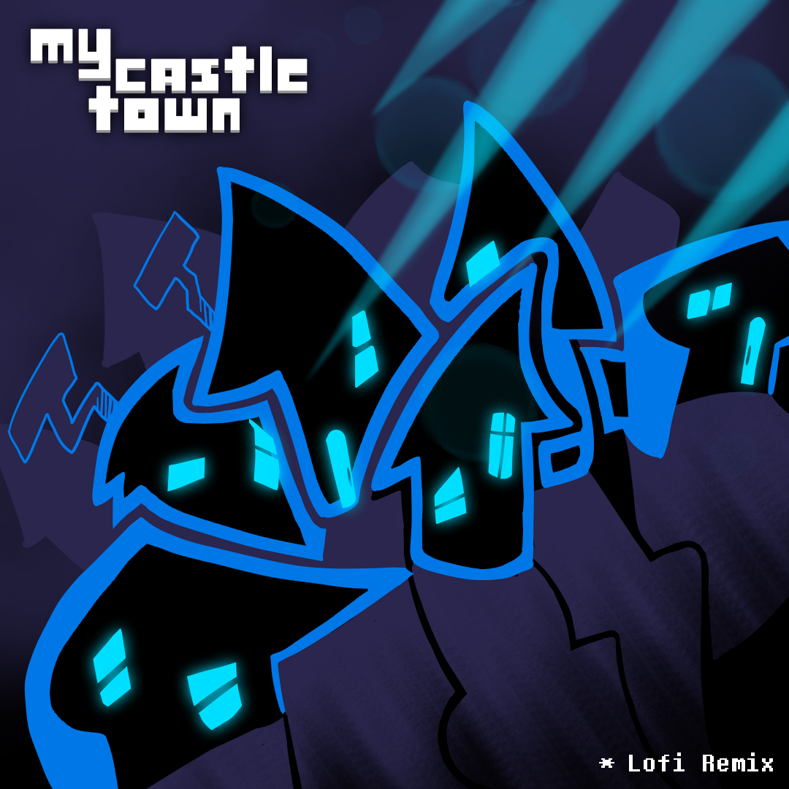
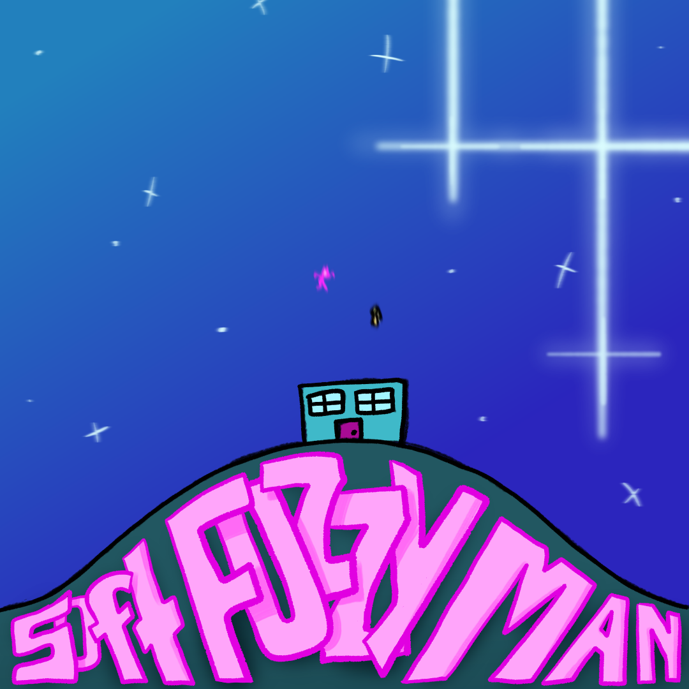
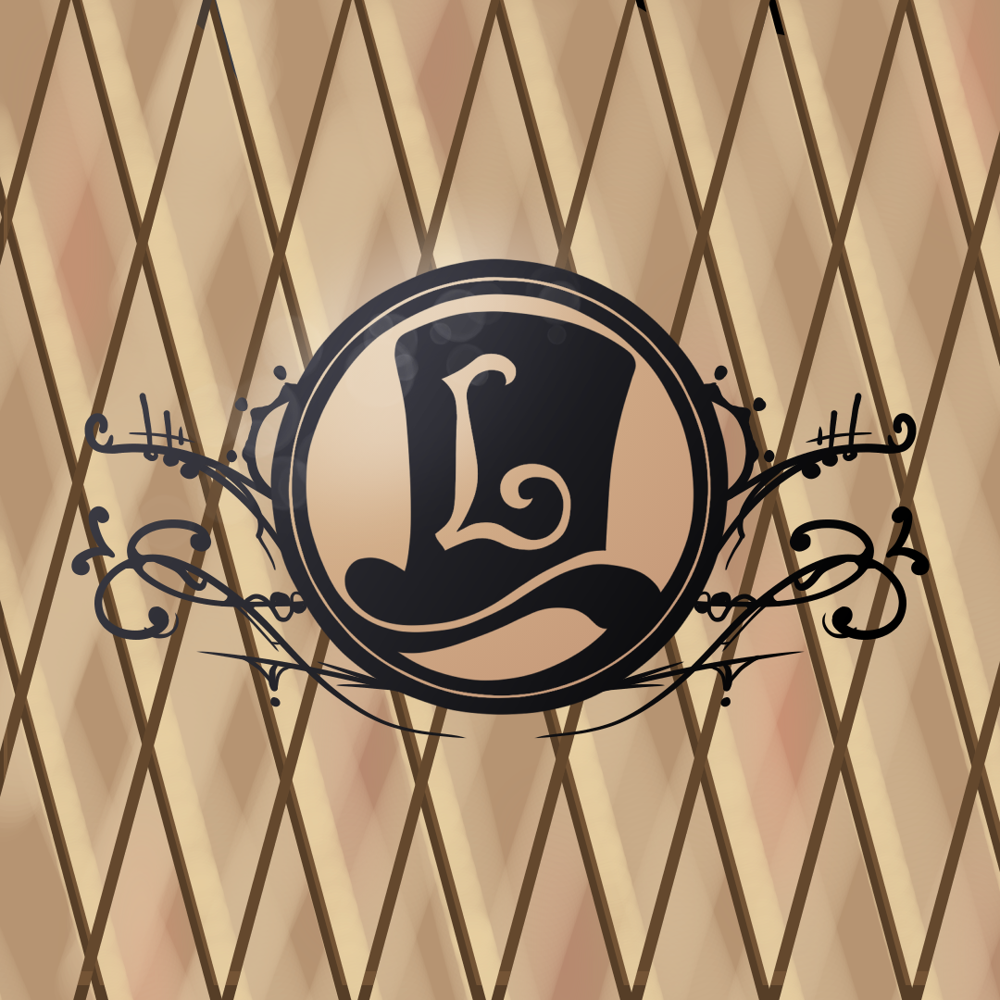

Since 2020, Nicolas has used FL Studio to compose various digital music tracks, often for personal enjoyment but occasionally producing for others. Originally introduced to FL Studio during his piano lessons (which were partially turned into composition critiques), he has enjoyed making remixes of his favorite songs and creating original compositions. Some of which even have album covers created for them.
Take a listen to his library of works below.
The Boss
Themed 3-piece suite
Suspense
The Boss
Solemn Victory
The War of the Worlds Radio Drama
For SCU MUSC 12 (Apr - Jun 2023)
Swing Band
1930s edition
2023 edition
Ending Jingle
1930s edition
2023 edition
Original Compositions
Electric Guitar Melody
Hard Rock Melody
Phone Hard Rock
Sonata & Theme Variation
(See Piano for the original version of this piece, "Frantic Melody")
Remixes
My Castle Town - Deltarune (Lofi Remix)
Soft Fuzzy Man - Lemon Demon (Recreation)
One Stop Shop - Professor Layton (Remix)
Shop Theme - Undertale (Remix)
Shop Theme - Undertale (Remix)
Lofi edition
Jevil + Once Upon A Time - Deltarune & Undertale (Remix / Mashup)
Vs. Susie - Deltarune (Recreation)